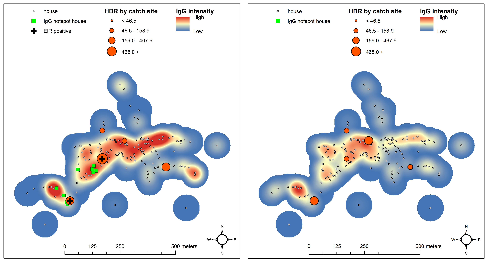

Map of Anopheles mosquito exposure on the Thai-Myanmar border
Map indicates human IgG responses to mosquito (Anopheles) saliva for a study village in the wet season (left) and dry season (right) along the Thailand-Myanmar border. The smoothed layer indicates relative intensities of IgG values, ranging from low (dark blue), to medium (yellow), to high (dark red). Houses are represented by grey points and clusters of neighbors with higher than expected values of IgG are indiated by green squares. The human biting rate level in primary vectors per catch site is indicated by dark orange graduated cylinders. If one or more primary vector mosquito had malaria sporozoites it is indicated by a dark black cross at the respective catch site. Details in: The Journal of Infectious Diseases, Volume 215, Issue 3, 1 February 2017, Pages 396–404.https://doi.org/10.1093/infdis/jiw543